Nossos Produtos
Trabalhamos com grande variedade de plantas, vasos e acessórios.
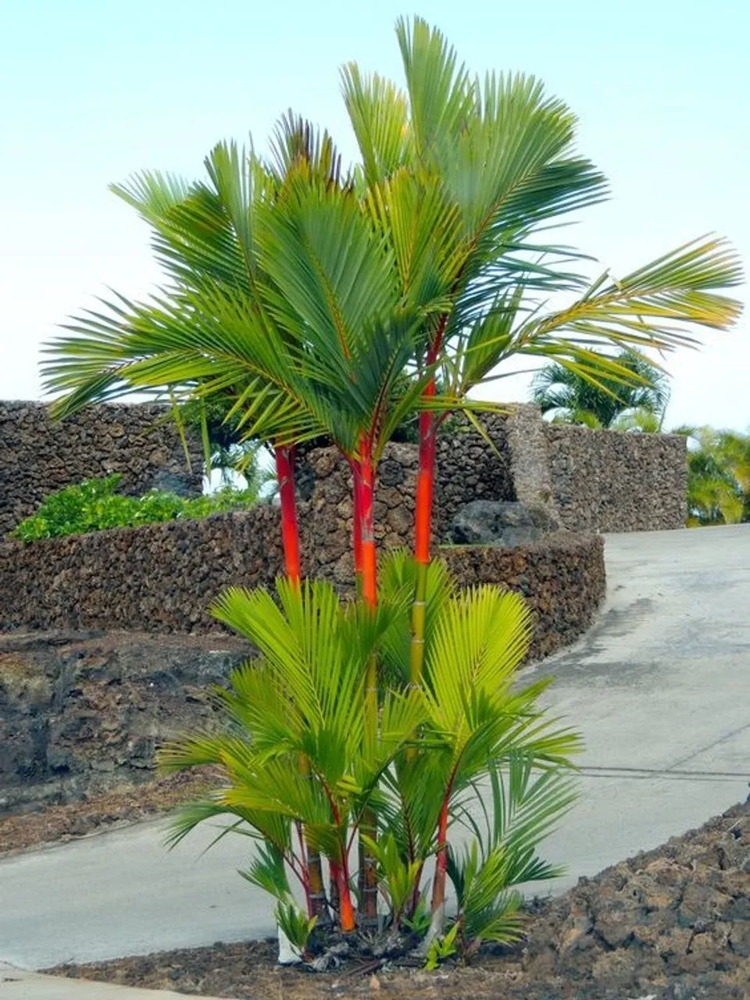
Palmeiras
Perfeitas para áreas externas, trazendo elegância e destaque.
Ver opções no WhatsApp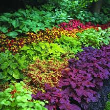
Forrações
Ideais para cobertura de solo e acabamento de jardins.
Ver opções no WhatsApp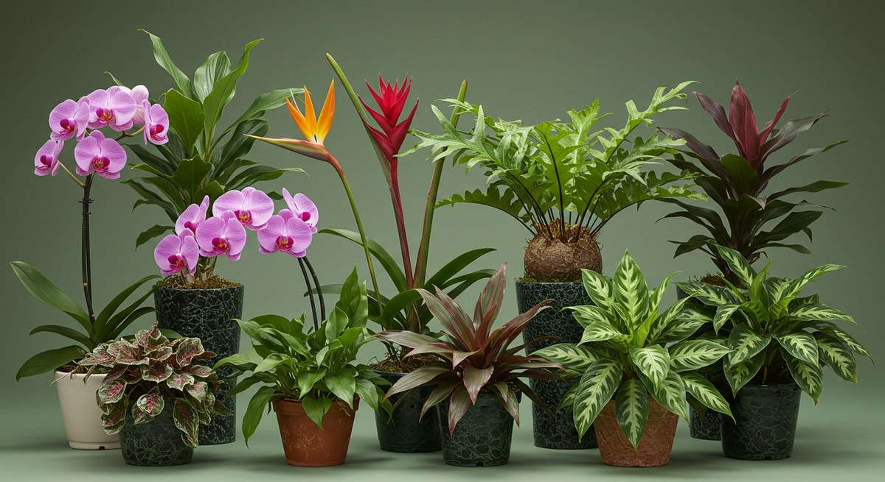
Plantas Ornamentais
Variedade de plantas para decorar e valorizar qualquer ambiente.
Ver opções no WhatsApp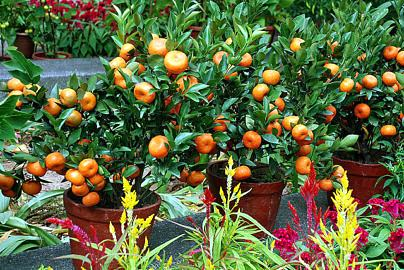
Frutíferas
Plantas que produzem frutos e trazem vida ao seu espaço.
Ver opções no WhatsApp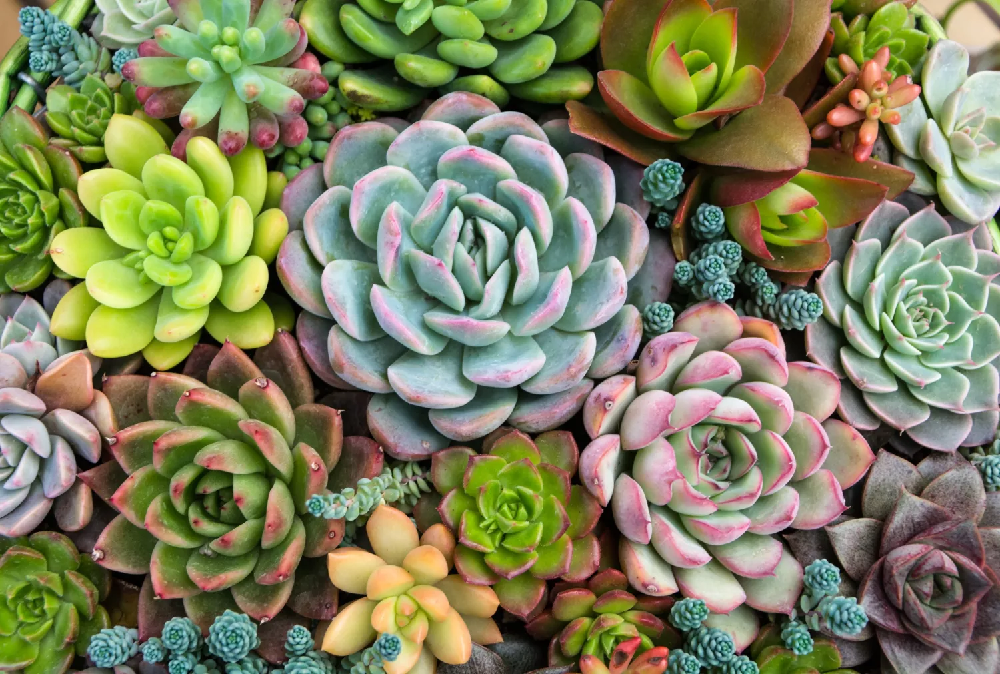
Suculentas
Fáceis de cuidar, ideais para decoração prática e moderna.
Ver opções no WhatsApp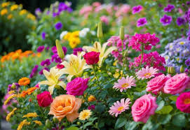
Plantas Floríferas
Espécies que florescem e trazem cor e beleza ao ambiente.
Ver opções no WhatsApp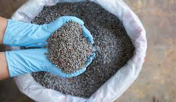
Fertilizantes e Terras
Tudo para manter suas plantas saudáveis e bem cuidadas.
Ver opções no WhatsApp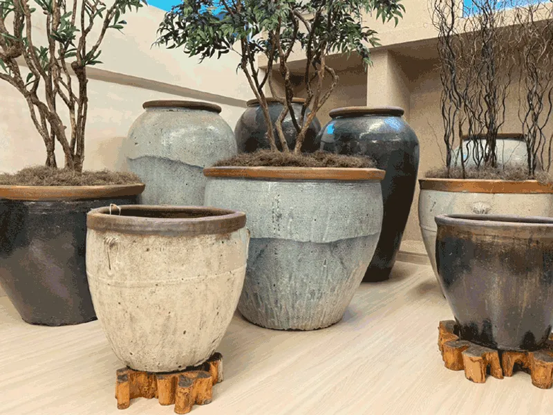
Vasos
Diversos modelos e tamanhos para combinar com seu ambiente.
Ver opções no WhatsApp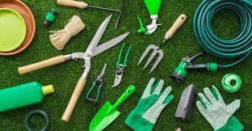
Acessórios
Itens essenciais para cuidado e manutenção das suas plantas.
Ver opções no WhatsAppSobre o Horto da Represa
O Horto da Represa nasceu do amor pela natureza e do compromisso em levar qualidade, beleza e autenticidade para cada espaço. Somos produtores de plantas ornamentais, além de palmeiras nativas e exóticas, cultivadas com cuidado, técnica e respeito ao tempo da natureza. Nossa produção própria nos permite oferecer espécies selecionadas, saudáveis e de alto padrão. Além da produção, contamos com um horto varejista localizado na Ilha de Guaratiba, onde recebemos clientes que buscam transformar seus ambientes com orientação especializada e atendimento próximo. Também desenvolvemos projetos de paisagismo que unem estética, funcionalidade e identidade. Acreditamos que cada espaço tem potencial para florescer quando recebe o verde certo, no lugar certo. Mais do que vender plantas, cultivamos experiências, criamos composições e ajudamos nossos clientes a construírem ambientes vivos, harmoniosos e cheios de significado. O Horto da Represa é natureza com propósito. 🌿
Falar com a equipe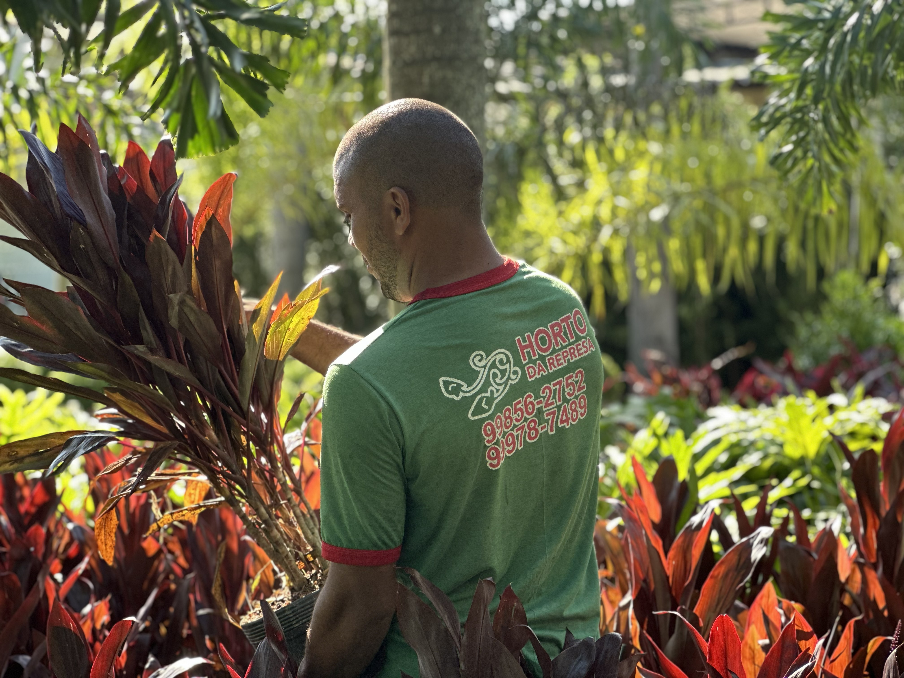
Paisagismo Profissional
Desenvolvemos projetos de paisagismo que valorizam seu espaço com estética, funcionalidade e escolha correta das espécies.
Trabalhamos com palmeiras exóticas, ornamentais e composição de ambientes, criando jardins elegantes, naturais e duradouros.
Solicitar projeto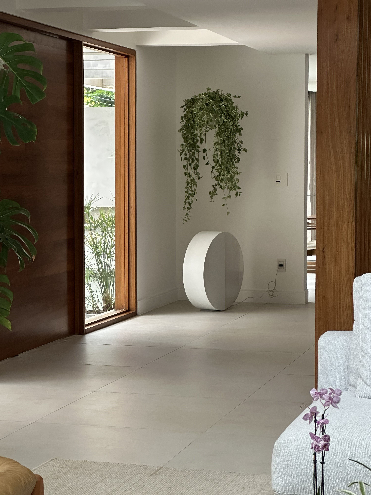
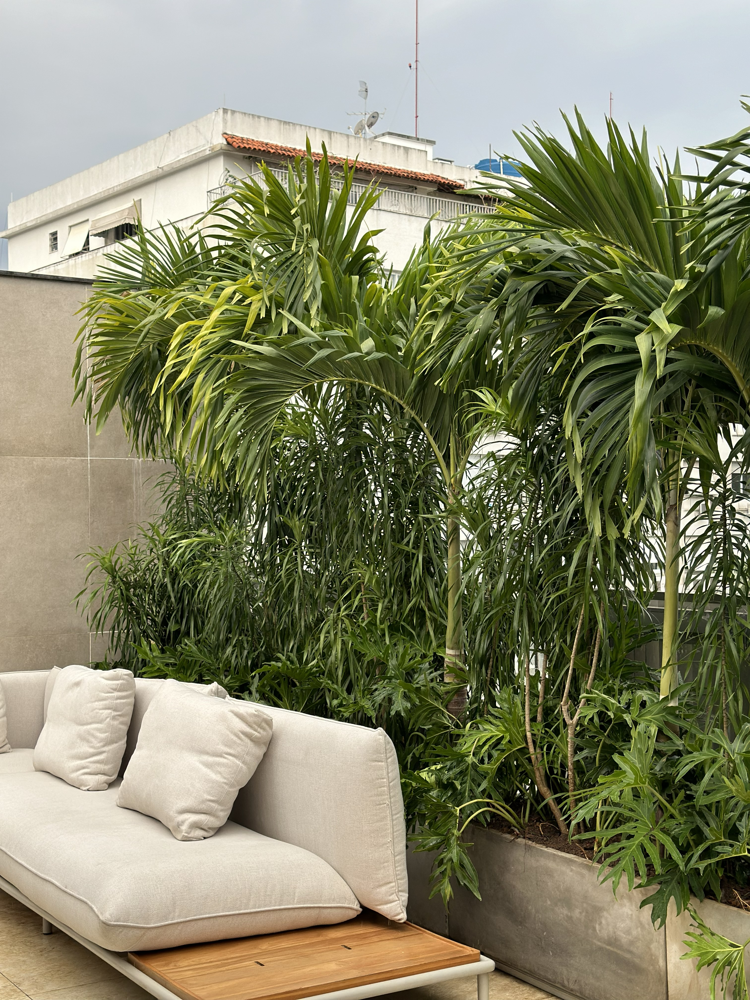
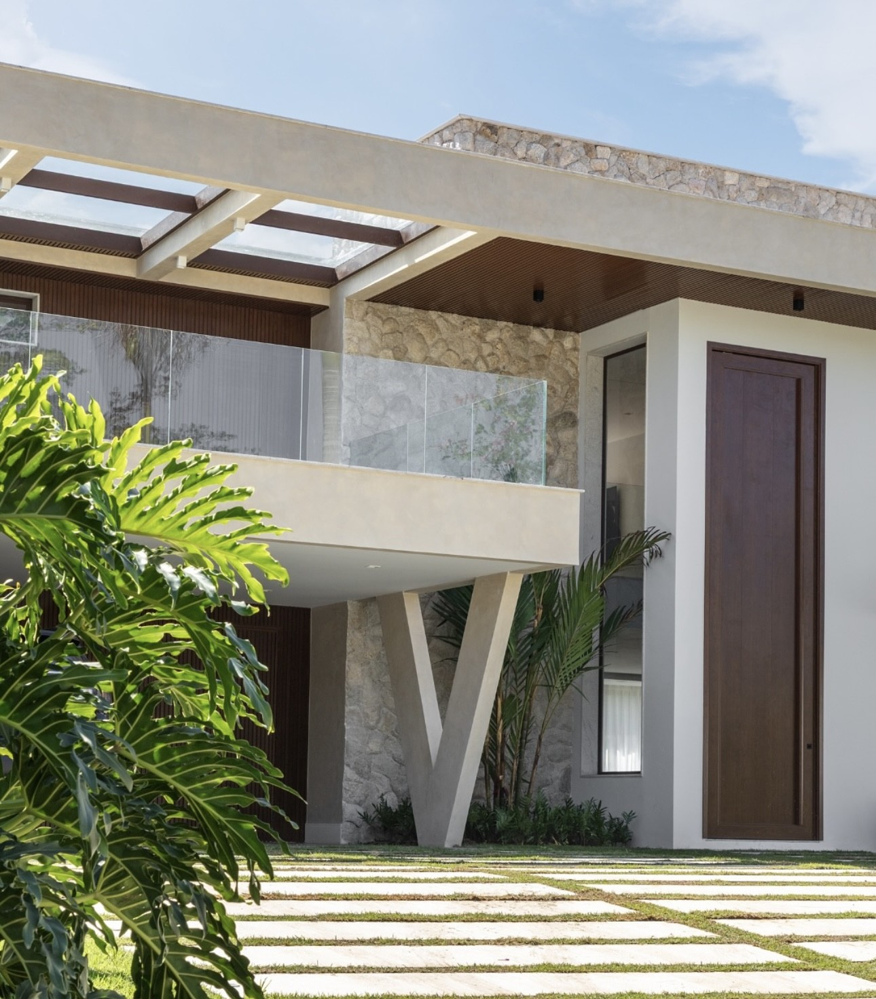
Contato
Chame a gente e receba opções atualizadas de plantas, vasos e acessórios.
Chamar no WhatsAppEndereço e Horários
Estrada da Ilha, 3620 — Rio de Janeiro, RJ
CEP: 23020-110
Seg–Sex: 07:00 – 17:00
Sábado: 08:00 – 13:00
Quer ajuda para escolher a planta ideal?
Fale com a gente no WhatsApp e te indicamos opções conforme seu ambiente e rotina.
Quero recomendação